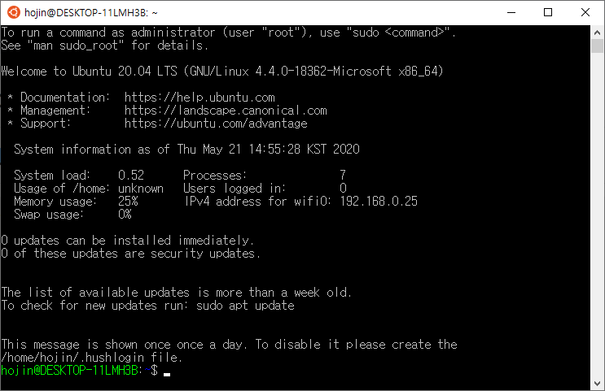

WSL (windows Subsystem Linux)
개발용 컴퓨터로 MacOS를 많이 사용합니다. 대안으로 Linux운영체제가 있지만, 다양한 응용프로그램과 사용을 같이 할 수 없다는 단점이 있습니다.
wsl은 윈우에서 Ruby, Python, PHP, NodeJS와 같은 개발환경의 복잡함을 보다 쉽게 개선하기 위한 오픈소스 환경입니다.
wsl 설치
윈도우에 설치된 wsl 확인하기
C:\Users\infoh>wsl -l
Linux 배포용 Windows 하위 시스템:
Ubuntu-20.04(기본값)
시작하기
윈도우 시작 목록에서 Ubuntu를 선택합니다.

갱신하기
hojin@DESKTOP-11LMH3B:~$ sudo apt update
[sudo] password for hojin: 비밀번호입력
...